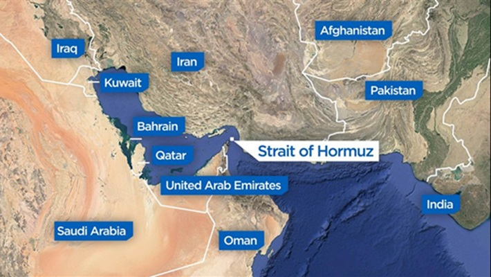

Why the Strait of Hormuz Matters

The Strait of Hormuz is one of the most strategically important waterways in the world. Despite being only about 21 miles wide at its narrowest point, it handles a massive share of global oil trade.
Significance
According to the BBC, about 20% of the world's oil and liquefied natural gas (LNG) passes through the Strait of Hormuz. This energy trade, which is mainly exported from the country of Qatar, is immensely important; in 2020, gasoline and diesel vehicles accounted for 98% of the global vehicle stock (ESSD). Because such a large share of global energy trade passes through Hormuz, trillions of dollars in economic activity depend on the strait every year, rendering it a critical economic hub and making it vulnerable to manipulation.
A study by the Federal Reserve Bank of Dallas found that a three-month closure of the Strait would reduce the level of global GDP by approximately 0.2% by year's end. This is equivalent to roughly $240 billion in lost global economic output at today's GDP levels, and would be devastating for countries around the world. This includes both more dependent countries like Saudi Arabia itself and more resilient countries like the United States. While reserves are in place in the event of such a closure, the average American still stands to lose thousands of dollars as gas prices increase. According to FactCheck.org, only a few weeks after initial US strikes against Iran began, “Oil prices… increased by double-digit percentages, which has contributed to a 50-cent-plus spike in the average price of a gallon of gasoline in the U.S.” For an average American household, even modest increases in fuel prices can translate into hundreds or thousands of dollars in additional annual expenses, depending on driving habits and the duration of the disruption.
Furthermore, the United States is certainly not the only Western country affected; Europe is far more reliant on imports for its natural gas (U.S. Energy Information Administration), and so a long-term disruption of the Strait would be catastrophic. According to the European Central Bank, the escalation of conflict with Iran has “resulted in an average supply loss of around 14 mb/d so far, representing 14% of global oil supply.” The world as a whole is feeling the effects of short-term, sporadic closures, and if Iran continues to restrict shipping within the Strait for the next several months, continued economic ramifications are likely to follow.
Geopolitical Importance
The Strait sits between Iran and the Arabian Peninsula, meaning multiple regional powers have strategic interest in controlling or influencing it.
This creates constant geopolitical tension involving shipping rights, naval presence, and regional security.
Current Events
Because energy markets are globally connected, even small disruptions in the Strait of Hormuz can affect fuel prices worldwide, from the United States to Europe and Asia.
Conclusion
The Strait of Hormuz is a textbook example of a geographic chokepoint shaping global politics and economics. Understanding it helps explain why certain regions have outsized importance in world affairs.